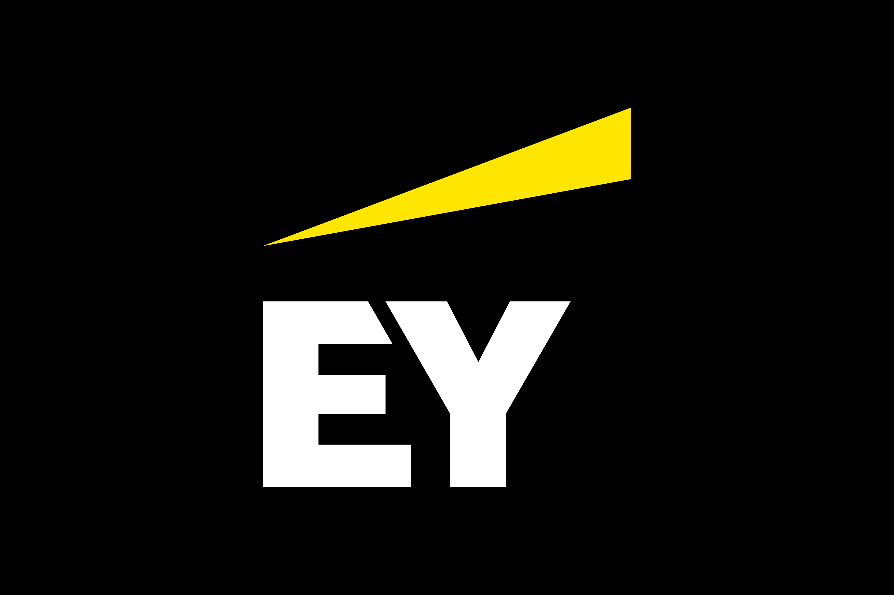
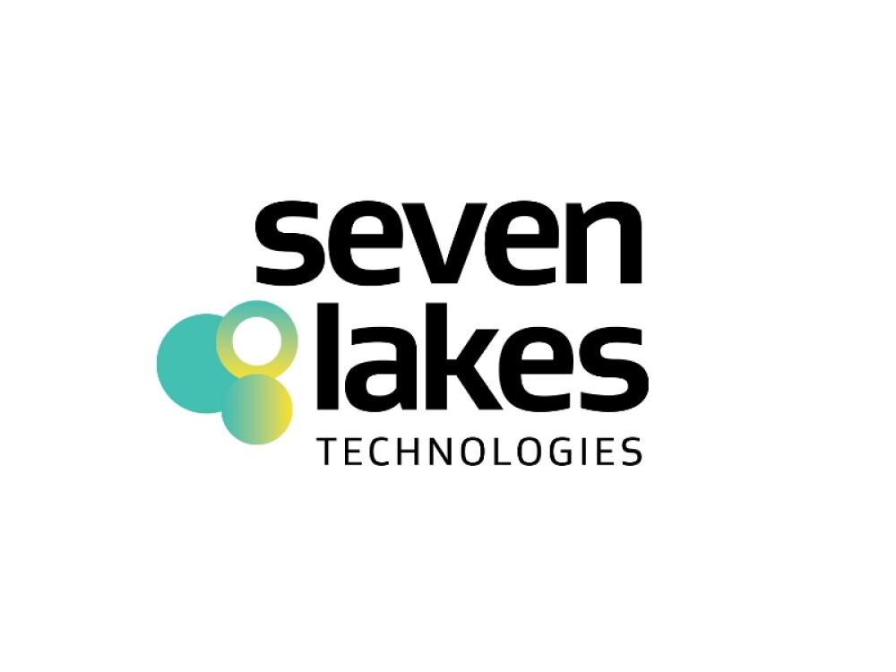
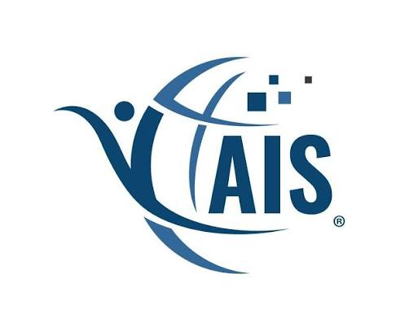

About
I lead applied AI and analytics at Walmart and am pursuing an MS in Artificial Intelligence at Georgia Tech. My research studies how to evaluate and trust AI agents, and how to draw sound conclusions from imperfect data.
Raised in Bengal among its painters and poets, I believe a good model, like a good poem, should say exactly what it means.
- Deep Learning
- Natural Language Processing
- Explainable AI
- Agentic AI
- Decision Science
- Statistics
Publications
-
HICSS
Beyond the Illusion of Power: Calibrating Quasi-Experiments in Observational IS
-
NeurIPS
Risk-Aware Adaptive Evaluation: Finding High-Impact Failures Under Limited Budgets
-
NeurIPS
Closing the Loop on Contrail Avoidance with Satellite Verification
-
PRIMA
Commitment Hierarchies under Intent Revision: A Belief-Revision Account of Salvage in Tool-Use Agents
-
DSI
Agentic Share-of-Search: A Multi-Agent AI System for Competitive Decision-Making in LLM-Mediated E-Commerce
-
DATA
Selection Bias Correction in Retail Intelligence
-
IJCSIT
News Analytics and Sentiment Analysis to Predict Stock Price Trends
Patents
-
USPTO
RL-Based Framework for Refresh Frequency Determination
-
USPTO
GenAI-Powered Private Brand Matching
Experience
Applied AI scientist and manager with over a decade of experience leading decision science and full-stack analytics, with a focus on econometric methods (IV, DiD, quasi-experiments), experimental design and production LLM systems.

- Defined and executed the multi-year data science roadmap for competitive market intelligence (pricing, shipping, assortment, adTech), aligned with eCommerce P&L goals and VP+ stakeholders across Product, Engineering and Merchandising.
- Architected an LLM-based product matching engine that extracts Private Brand entities from multimodal catalog data, combined with IV regression to improve competitive price positioning in low-elasticity categories.
- Owned the end-to-end model lifecycle for Gemini Pro, Flash and Gemma (training pipelines, prompt optimization, knowledge distillation, deployment and monitoring) on PySpark infrastructure serving tens of millions of items daily.
- Designed a data freshness framework using novel adversarial bandit algorithms (Exp3-Acc/AccIX) for large-scale knapsack optimization under budget constraints.
- Applied causal inference (IV, DiD, RDD, geo-randomized cluster trials) to pricing and promotion strategy, lifting seller GMV and cutting crawl costs while maintaining high price freshness on key value items.
- Built a real-time deal intelligence system and established team standards for model validation, experiment design and responsible AI, including human-in-the-loop review for high-GMV decisions.

- Built analytics products with C-level executives for finance, audit and tax professionals, substantially cutting project turnaround time.
- Designed A/B tests and controlled experiments for marketing campaigns and product upgrades; led SQL, SSIS, Alteryx and Python boot camps across business units.

- Designed modules for two flagship products for the Oil & Gas sector and managed new customer accounts, contributing to revenue growth.

- Optimized portfolio allocation with a multi-objective genetic algorithm (C++, Pareto front) using a Sharpe-ratio fitness function, outperforming the state of the art on risk-adjusted returns.
Memberships
- IEEESenior Member

Association for Information SystemsMember- Decision Sciences InstituteMember
Education & More
Education
- MS Computer Science (Artificial Intelligence), Georgia Tech Expected 2027
- B.Tech, Computer Science and Engineering, West Bengal University of Technology 2010–2014
Skills
- Python (PyTorch, scikit-learn), PySpark, SQL
- LLMs, RAG, agentic AI, knowledge distillation
- Causal inference, A/B testing, time series
- Deep learning: CNNs, Transformers, VAEs, GANs, diffusion
Awards
- Walmart: 6 Excellence Awards, 2 Bravo Awards, Employee of the Month
- EY Exceptional Client Services Award
Certifications
- NVIDIA: Rapid Application Development with LLMs
- NVIDIA: Building LLM Applications with Prompt Engineering
- NVIDIA: Building RAG Agents with LLMs
- Building Agentic AI Applications with LLMs
Contact
I am always glad to hear about research collaborations, speaking invitations, or a good book recommendation. Write to me at spandan1305@gmail.com.